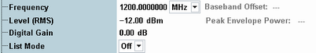

The following RF settings are active as long as the list mode is switched off.

Sets the frequency of the unmodulated RF carrier. The baseband modes "Dual Tone" and "ARB" cause a modulated signal and thus a modification of this generator frequency.
Remote command:Sets the base level of the constant-frequency RF generator. The resulting peak envelope power (PEP) is displayed for information.
The indicated PEP corresponds to the actual peak output level at the output connector, assuming the "External Attenuation (Output)" is zero. For a CW signal, the PEP is equal to the base level. For a dual tone signal, the PEP is equal to the power of the combined signal corresponding to constructive (in-phase) superposition of the "Source 1" and the "Source 2" contributions.
The PEP is not valid for list mode signals.
Example: PEP for dual-tone signal
A dual-tone signal with "Ratio" = 0 dB contains two source contributions with equal power: P(source 1) = P(source 2) = ½ * Level(RMS).
The peak voltages of the source contributions are also equal: U(source 1) = U(source 2) = 1/sqrt(2) U(dual tone). The PEP is obtained where both peak voltages are in phase so that U(PEP) = sqrt(2) * U(dual tone). Hence PEP = 2 * level (RMS). If the level(RMS) is set to 0 dBm, the R&S CMW displays a PEP of approx. +3 dBm.
Remote command:Modifies the "Level (RMS)" by a specific value.
The "Digital Gain" parameter provides direct access to the IF levels. The relationship between the digital gain and the total RF generator level is highly linear: Use different digital gain values at equal "Level (RMS)" if you want to vary the GPRF generator power with maximum accuracy over a limited dynamic range.
The digital gain is not available in dual-tone mode.
Remote command:Enables or disables the list mode.
"Off" | The RF generator generates a constant-frequency signal. |
"On" | The RF generator steps through a list of frequencies. For configuration of the list mode, see "List Configuration". |